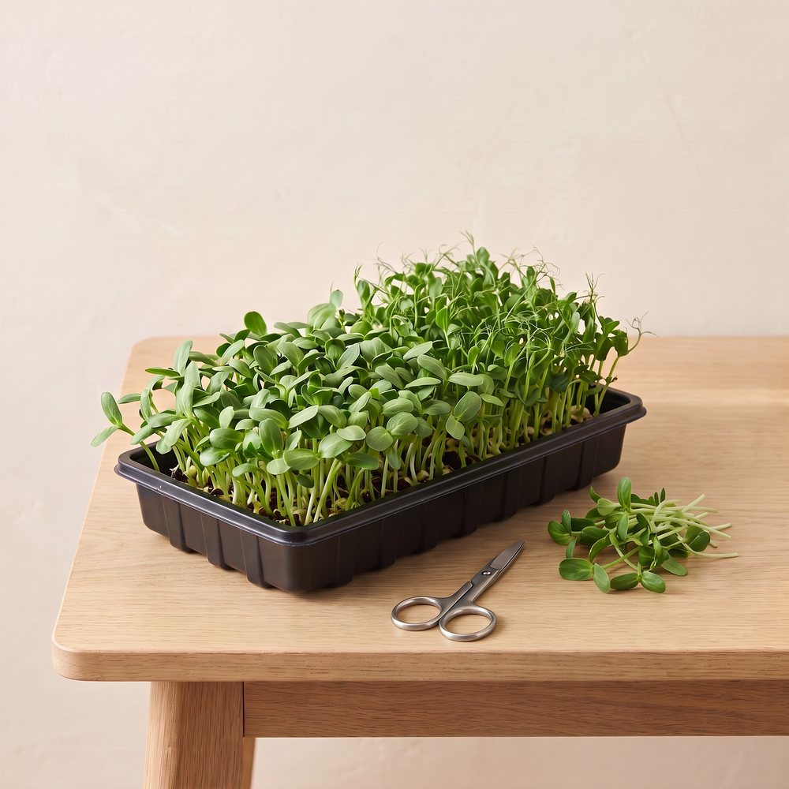
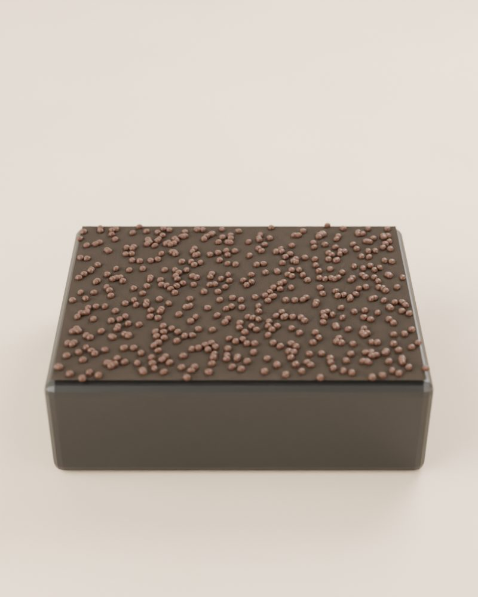

Beginner guide · Microgreens
Grow microgreens on a windowsill.
The fastest harvest there is. Sow a tray of seeds, and in about 1 to 3 weeks you're cutting fresh greens for salads, sandwiches, and eggs.

01 The idea
What are microgreens?
Microgreens are vegetable and herb seedlings that you cut and eat when they're just a few centimetres (an inch or two) tall, usually when their first leaves open. They taste like a stronger version of the grown-up plant: radish microgreens are peppery, pea shoots taste like fresh peas, and broccoli is mild and crunchy.
Because you harvest so young, the seed has most of the energy the plant needs. That means no plant food, no big setup, and very little that can go wrong. It's a great first project, or something to grow while you wait for a jar of lettuce.
Drag the slider to see a tray go from seeds to harvest.
Watch it grow

Times are rough and change with your seeds, light, and temperature.
02 Shopping list
What you need
Tick things off as you gather them.
-
About 3 to 5 cm (1 to 2 inches) deep, with drainage holes. DIY: a plastic takeout or berry container with holes poked in the bottom.
-
This sits underneath to catch water, and lets you water from the bottom. DIY: a baking dish, plate, or the container's lid.
-
Seed-starting mix or fine potting soil is easiest. Coco coir or a hemp grow mat also work if you'd rather skip the soil.
-
Buy seeds sold for microgreens or sprouting. Regular garden seed packets are sometimes coated with chemicals that aren't meant to be eaten, and they work out expensive because you sow so many. Easy first picks: radish, broccoli, and peas.
-
For gently misting the seeds in the first few days.
-
A bright window works for much of the year. In winter, or if your window is dim, a small LED grow light helps a lot.
-
For harvest day.
03 Method
Step by step
-
Soak big seeds (like peas)
Large seeds like peas and sunflowers sprout better if you soak them in water for about 8 to 12 hours first. Small seeds like radish and broccoli go in dry.
-
Fill the tray
Add about 2.5 cm (1 inch) of growing mix, water it until it's evenly damp but not soggy, and press it flat with your hand or a small board.
-
Sow thickly
Sprinkle the seeds evenly over the whole surface, much closer together than you would in a garden. The seeds should almost touch, but not pile on top of each other. Press them down gently. There's no need to bury them.
-
Mist and cover
Mist the seeds well, then cover the tray to keep it dark and damp. An upside-down tray or a plate works. Mist once or twice a day.
-
Uncover and give light
After about 2 to 4 days, when most seeds have sprouted and the shoots are a couple of centimetres (about an inch) tall, take the cover off and move the tray into the light. Shoots that look pale or yellow at first turn green within a day or so. Aim for about 12 to 16 hours of light.
-
Water from below
From now on, pour water into the bottom tray instead of over the top, and let the soil soak it up. Keeping the leaves and stems dry helps stop mould. Water when the tray feels light or the surface looks dry.
-
Harvest!
Most microgreens are ready about 7 to 21 days after sowing, once their first leaves have opened. Radish is one of the quickest; peas take a bit longer. Cut just above the soil with scissors, rinse, and eat.
Times are rough and change with your seeds, light, and temperature.
Most microgreens don't grow back after cutting. Pea shoots sometimes give a smaller second cut. Afterwards, the old roots and soil can go in your compost, and you can start a fresh tray. Many growers start a new tray every week so there's always something ready.
04 Troubleshooting
If something looks wrong
- White fuzz near the roots
- Usually this is just tiny root hairs, which are normal, especially on radish and broccoli. They disappear if you mist them. If the fuzz looks like grey cobwebs spreading over the seeds and smells musty, it's mould: water less, water from below, and give the tray more airflow (a small fan helps).
- Seedlings falling over at the base
- This is often from too much water and not enough air. Let the soil dry out a little between waterings and keep air moving.
- Tall, floppy, pale seedlings
- They're stretching for light. Move them closer to the window or grow light, or uncover them a little sooner next time.
- Patchy sprouting
- The seeds may have dried out, or they may be old. Keep them covered and misted until they sprout, and try fresher seeds.
Share your first tray
Join the Root Collective to swap tips, ask questions, and show off your harvest.
Join us, it's free